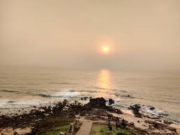
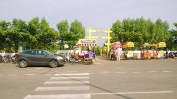

Tenneti Park, also known as VUDA Park, is a beautiful and serene park located along the coastline of Vizag. It’s a popular spot for both locals and tourists to relax, take a stroll, and enjoy the stunning views of the Bay of Bengal. The park is named after Tenneti Viswanadham, a prominent freedom fighter and politician from Andhra Pradesh. Tenneti Park is well-maintained with lush greenery, walking paths, and benches where you can sit and soak in the peaceful atmosphere. The park also features a small amphitheater that hosts cultural events and performances. It’s an ideal place for families to spend quality time together, have a picnic, or simply unwind while watching the waves crash against the shore. Don’t forget to visit Tenneti Park during your trip to Vizag for a refreshing experience amidst nature.
 